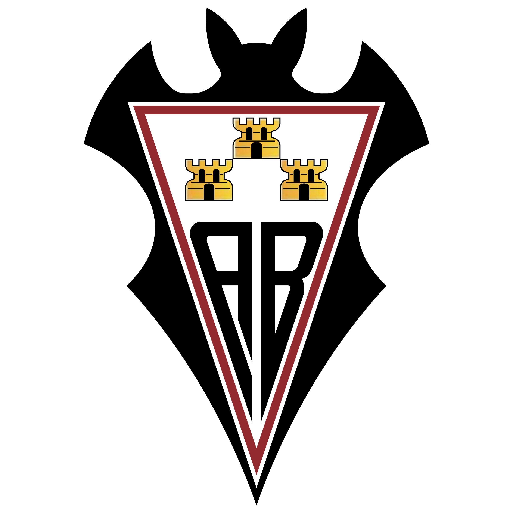
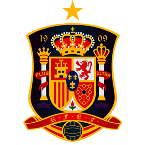
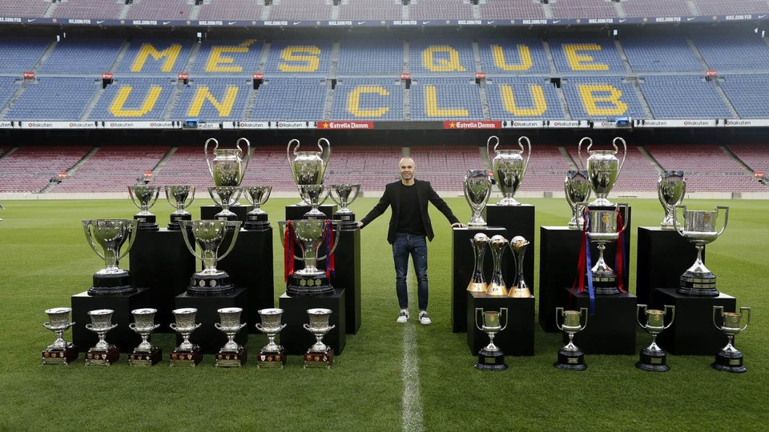

Andres Iniesta

Iniesta playing a match for FC Barcelona

Albacete
- Andres Iniesta was born in a small village called Fuentealbilla, in the province of Albacete, Castile–La Mancha, Spain. It was in this club where Iniesta spent the very early years of his youth career as a footballer. During Iniesta's stay at Albacete, he attracted the attention of scouts from clubs in Spain, and his parents decided to travel to Barcelona to enroll him in the youth ranks.

FC Barcelona
- At age 12, Iniesta joined FC Barcelona's youth academy - "La Masia." He excelled as a youth player, and was team captain of the U-15 team that won the Nike Premier Cup in 1999. He scored a last minute goal in the final, which gave Barcelona the victory, and was also named player of the tournament.
- Iniesta played with Barcelona's B team for a short time, but played his first official match with FC Barcelona in October 2002. It was at Barcelona where Iniesta spent the major part of his career as a professional footballer. His role was vital as a playmaker in the seasons to come, and he developed into a more mature footballer. As Iniesta developed, he became better and better, and soon evolved into an indispensable player for FC Barcelona. In the pre-season of 2007, he helped the team win the Joan Gamper Trophy, and scored important goals in the league games, and Champions League.
- In 2008, Iniesta was elected fourth-captain of the team, cementing him as one of the most important squad members and one of the leaders. In a semi-final match against Chelsea FC, he scored a goal in the final minute of extra time, that helped Barcelona go through to the final.

Spain National Team
- Andres Iniesta has also been called up to play for the Spanish National Team, and has been one of their more important figures in the past years.
List of Awards / Trophies
FC Barcelona
- La Liga: 2004–05, 2005–06, 2008–09, 2009–10, 2010–11, 2012–13, 2014–15, 2015–16, 2017–18
- Copa del Rey: 2008–09, 2011–12, 2014–15, 2015–16, 2016–17, 2017–18
- Supercopa de España: 2005, 2006, 2010, 2011, 2013, 2016
- UEFA Champions League: 2005–06, 2008–09, 2010–11, 2014–15
- UEFA Super Cup: 2011, 2015
- FIFA Club World Cup: 2009, 2011, 2015
Spain National Team
- FIFA World Cup: 2010
- UEFA European Championship: 2008, 2012
- UEFA European U-19 Championship: 2002
- UEFA European U-17 Championship: 2001
Individual
|
|
|
|